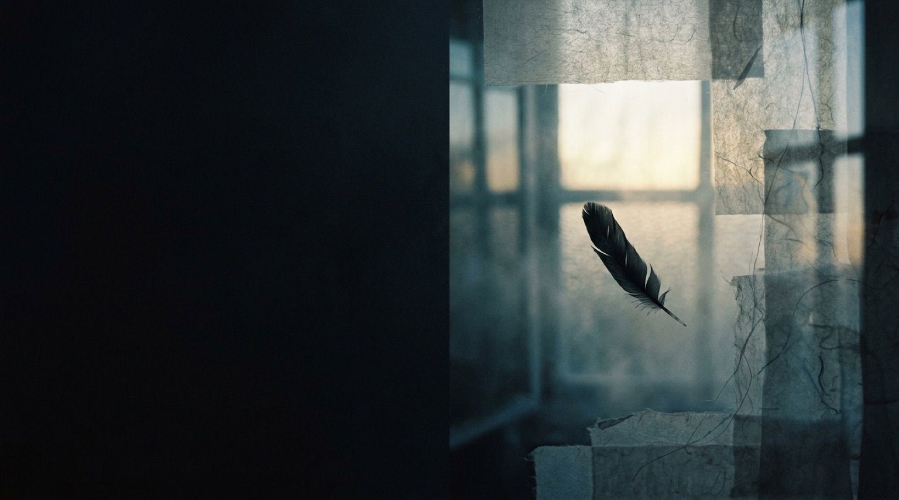

Ugou Works / Quiet creative studio
静かに、
もう一度つくる。
働く人が、自分を静かに立て直せる作品と道具を。記事、漫画・絵本、動画、Webツール、ゲームを、この場所から届けます。
Works / このサイトで楽しむ
今日の入口を、
ひとつ見つける。
記事、漫画・絵本、動画、Webツール、ゲーム。5つの棚から、新しい作品へ進めます。
Featured / 今、見てほしい作品
05 / GAME
ORBIT ONE
— 重力の輪 —
タップひとつで軌道を切り替え、青いカケラを集めるワンボタンアクション。インストールなしで遊べます。
ORBIT ONEを遊ぶChannels / 外部で楽しむ
好きな場所で、
続きをどうぞ。
読む、見る、聴く、選ぶ。それぞれのチャンネルへ、ここから直接つながります。
About / 烏合ワークスについて
小さく始めて、
つくったものを残す。
烏合ワークスは、ブラウザで遊べるゲーム、日々に使えるWebツール、短い物語や動画、考えごとをつくる小さな作品スタジオです。
うまくいかない日にも、少し遊ぶ、読む、眺めることで、自分の火を取り戻せる場所を育てています。
記事と制作の記録を見る